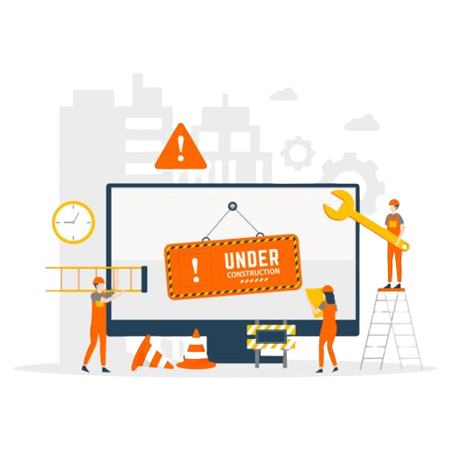

<ion-header [translucent]="true">
  <ion-toolbar>
    <ion-buttons slot="start">
      <ion-menu-button></ion-menu-button>
    </ion-buttons>
    <ion-title>Configuración</ion-title>
  </ion-toolbar>
</ion-header>

<ion-content [fullscreen]="true">
  <div style="display: flex; justify-content: center; align-items: center; margin-top: 17vh;">
    
  </div>
</ion-content>
